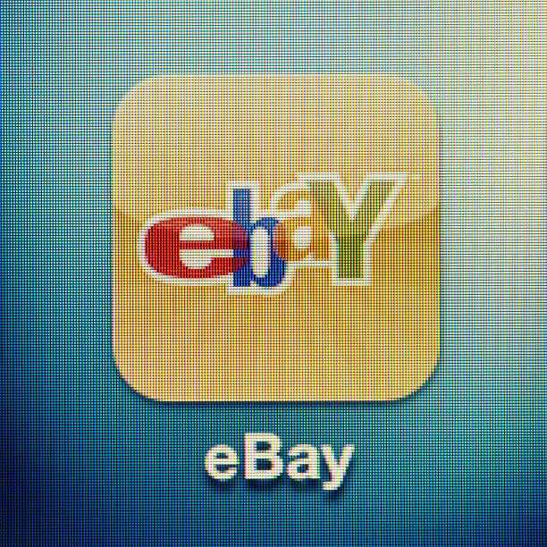

The dotcom bubble is a stock market bubble that was caused by speculation in dotcom or internet-based businesses from 1995 to 2000. The companies were largely those with a “.com” domain on their internet address.
The dotcom bubble’s origins can be traced to the launch of the World Wide Web in 1989, the subsequent establishment of internet and tech-based start-up companies during the 1990s, and rising momentum as the decade came to its end. The period marked the emergence of the widespread use and adoption of the internet from shopping online, communication, and a source of news.

When Amazon was founded on July 5, 1994, as a website that only sold books, founder Jeff Bezos had a vision for the company's explosive growth and ecommerce domination.
Jeff Bezos founded Amazon from his garage in Bellevue, Washington, on July 5, 1994.
It started as an online marketplace for books but expanded to sell electronics, software, video games, apparel, furniture, food, toys, and jewelry.
Like other dotcoms, Amazon's business plan focused more on brand recognition and less on income, and it did not turn a profit until the fourth quarter of 2001.
eBay was founded by Pierre Omidyar in 1995, and became a notable success story of the dot-com bubble. The company manages the eBay website, an online auction and shopping website in which people and businesses buy and sell a wide variety of goods and services worldwide. The website is free to use for buyers, but sellers are charged fees for listing items after a limited number of free listings, and again when those items are sold.
